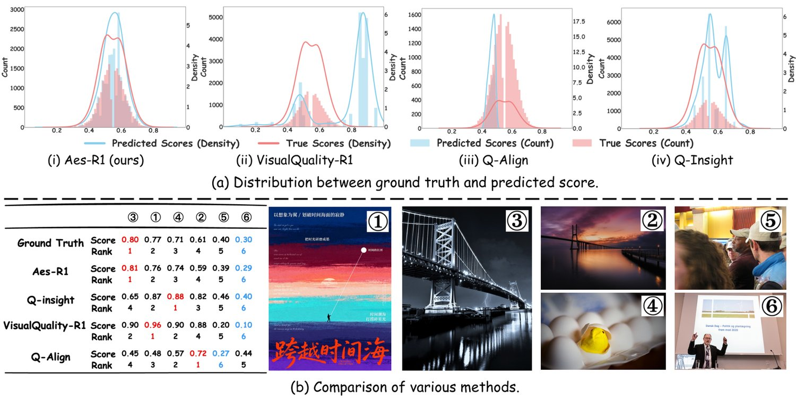
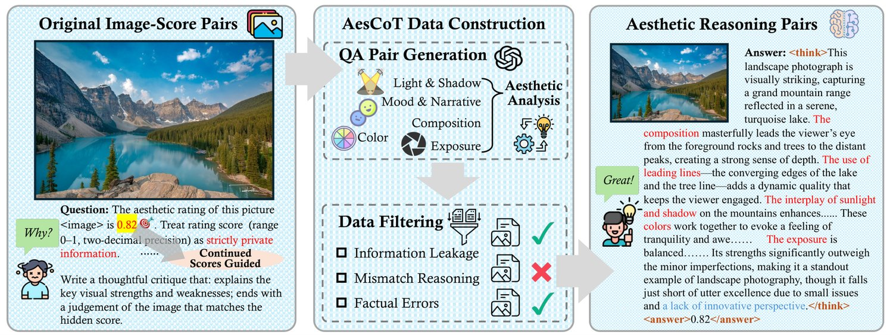
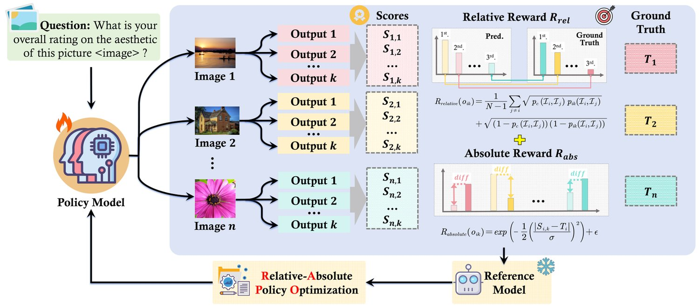
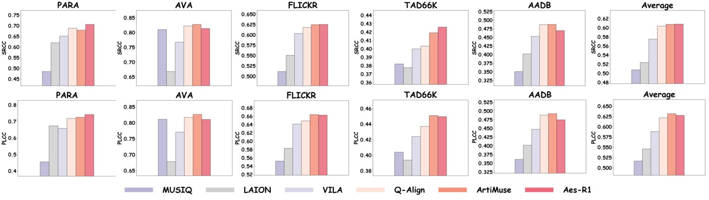
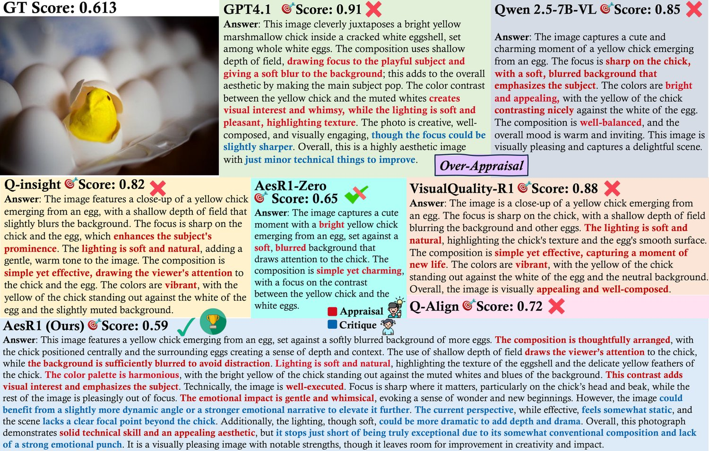
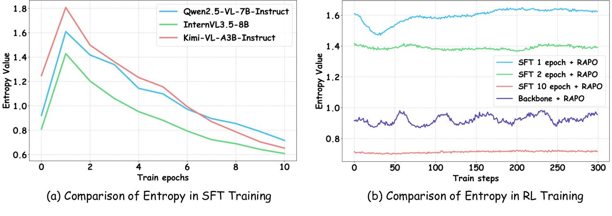

Unlocking the Essence of Beauty: Advanced Aesthetic Reasoning with Relative-Absolute Policy Optimization
Advancements in multimodal large language models (MLLMs) demonstrate strong potential across various domains, with expanding applications in human-centered Image Aesthetic Assessment (IAA) through high-level cross modal understanding capacity. Compared to data-intensive supervised fine-tuning (SFT), the efficient and scalable reinforcement learning (RL) is a promising alternative for IAA. However, directly applying RL to IAA fails to inspire reasoning patterns without prior aesthetic knowledge, and modeling an appropriate reward proxy to evaluate aesthetic scores is intricate. To this end, we propose Aes-R1, a comprehensive IAA framework. Concretely, Aes-R1 integrates a data pipeline, AesCoT, to construct and filter high-quality aesthetic reasoning data used for cold-start. After teaching the model to generate structured explanations before scoring, we employ the Relative-Absolute Policy Optimization (RAPO), a novel RL algorithm that jointly optimizes absolute score regression and relative ranking order, improving both per-image accuracy and cross-image preference judgments. Extensive experiments demonstrate that Aes-R1 improves the backbone’s average PLCC/SRCC by 47.9%/34.8%, surpassing state-of-the-art baselines of similar training size. More ablation studies validate Aes-R1’s robust generalization in out-of-distribution scenarios with limited supervision.11 1 Our code is available at https://github.com/ssssmark/AesR1.

图 1：（a）AVA 测试集上真实分布与预测分布的对比。与基线方法相比，Aes-R1 与真实分布吻合得最为紧密。（b）案例研究表明，得益于相对—绝对奖励设计，Aes-R1 超越了那些存在预测偏差、序数辨别力不足的其他方法。
Recent advances in multimodal large language models (MLLMs) (Qwen et al., 2025; OpenAI et al., 2024; Team et al., 2025) have shown remarkable potential in image assessment (Xu et al., 2023; Wu et al., 2023b). To date, most efforts center on image quality assessment (IQA) (Wu et al., 2024; Wu et al., 2023a; You et al., 2025), which measures images’ sharpness and clarity. As the development of creative design and social media recommendations, there is an emerging demand for reliable metrics that go far beyond pixel-level fidelity and some researchers have paid attention to image aesthetic assessment (IAA) (Huang et al., 2024; Zhou et al., 2024), leveraging the cross-modal understanding capabilities of MLLMs to capture high-level features such as texture, color harmony and emotional impact, broadening vision tasks to the interpretable and human-centered aesthetic modeling.
多模态大语言模型（MLLM）的最新进展（Qwen et al., 2025; OpenAI et al., 2024; Team et al., 2025）在图像评测上展现出可观潜力（Xu et al., 2023; Wu et al., 2023b）。迄今为止，多数工作集中于图像质量评估（IQA）（Wu et al., 2024; Wu et al., 2023a; You et al., 2025），其衡量的是图像的清晰度与锐度。随着创意设计与社交媒体推荐的发展，人们对超越像素级保真度的可靠指标产生了新的需求，部分研究者开始关注图像美学评估（IAA）（Huang et al., 2024; Zhou et al., 2024），借助 MLLM 的跨模态理解能力捕捉纹理、色彩和谐与情绪感染力等高层次特征，把视觉任务拓展到可解释、以人为本的美学建模。
Current IAA methods generally adopt supervised fine-tuning (SFT) on score-based targets (Wu et al., 2023a; Cao et al., 2025). While such implicit reasoning restricts MLLMs from aligning visual elements with multidimensional aesthetic criteria and lacks explainability in practice (Wu et al., 2025; Li et al., 2025), some propose generating reasoning prior to the answer, supporting the integration of fine-grained descriptive feedback with aesthetic scores (Li et al., 2025). Nonetheless, existing resources (He et al., 2022; Yang et al., 2022) primarily consist of score-based data, and artist-level rationales necessitate expensive expert annotation. Moreover, as presented in Tab. 3, extensive SFT causes the model to learn bias and overfit on curated dataset, rapidly reducing entropy and hindering further optimization, making it costly and difficult to scale.
当前的 IAA 方法一般在基于分数的目标上做有监督微调（SFT）（Wu et al., 2023a; Cao et al., 2025）。这种隐式推理限制了 MLLM 把视觉元素与多维度美学准则联系起来，实践中也缺乏可解释性（Wu et al., 2025; Li et al., 2025）；有工作提出在给出答案前先生成推理，从而把细粒度描述性反馈与美学分数结合起来（Li et al., 2025）。然而既有资源（He et al., 2022; Yang et al., 2022）主要由打分数据构成，而艺术家水准的推理依据需要昂贵的专家标注。此外，如表 3 所示，大规模 SFT 会让模型学到偏置并在精选数据集上过拟合，熵迅速下降，阻碍进一步优化，代价高昂且难以扩展。
Reinforcement learning (RL) is an effective alternative and has shown strong efficiency and generalization in goal-driven tasks (Chu et al., 2025a; Chen et al., 2025a). However, in our pilot study, directly applying RL to IAA exposes several challenges. 1) Although achieving high performance (Tab. 3, SFT 0 epoch, RAPO), the end-to-end RL fails to activate aesthetic reasoning patterns in the backbone due to the absence of corresponding corpus pre-training (Gandhi et al., 2025; Ji et al., 2025), resulting in the poor explanatory rationales as shown in Fig. 5 (AesR1-Zero). 2) Modeling an appropriate reward proxy to evaluate aesthetic score is intricate since the absence of unified criteria for aesthetic preferences. We reproduce the related works on AVA (Murray et al., 2012) and find that, although VisualQuality-R1 (ii) (Li et al., 2025) successfully separates high- and low-quality images using the rank reward, it fails to calibrate scores, while Q-insight (iv) (Wu et al., 2025) suffers from peak mismatch when optimizing with a scalar reward, as presented in Fig. 1.
强化学习（RL）是一种有效的替代方案，在目标驱动任务中展现出很高的效率与泛化能力（Chu et al., 2025a; Chen et al., 2025a）。但在我们的先导研究中，把 RL 直接用于 IAA 暴露出若干难题。1）尽管能取得较高性能（表 3，SFT 0 epoch + RAPO），端到端 RL 却无法在基座模型中激活美学推理模式，因为缺少相应语料的预训练（Gandhi et al., 2025; Ji et al., 2025），导致解释性理由质量不佳，如图 5 中的 AesR1-Zero 所示。2）由于缺少统一的美学偏好准则，为美学分数建模合适的奖励代理十分棘手。我们在 AVA（Murray et al., 2012）上复现了相关工作，发现 VisualQuality-R1（ii）（Li et al., 2025）虽能用排序奖励成功区分高质量与低质量图像，却无法校准分数；而 Q-insight（iv）（Wu et al., 2025）在用标量奖励优化时存在峰值错配，如图 1 所示。
Integrating aesthetic priors and an effective reward mechanism is crucial for IAA in RL optimization. Inspired by Deepseek-R1 (Guo et al., 2025a), we find that cold-start bootstrapping with thousands of high quality reasoning data effectively induces robust aesthetic analysis patterns (Gandhi et al., 2025; Shao et al., 2025). Following this, RL transforms IAA into a data efficient self-learning process, primarily guided by the reward signal. Building on the results in Fig. 1, we observe that human aesthetic judgment is inherently context-dependent besides absolute quality evaluation, as also noted by Immanuel Kant’s assertion that "there can be no objective rule of taste which shall determine by means of concepts what is beautiful" (Kant, 1790). Therefore, we argue the IAA reward should comprise two complementary facets: a relative dimension that ranks images by comparative appeal and an absolute dimension that assesses intrinsic aesthetic merit, thereby simultaneously enforces ordinal consistency and calibrates absolute aesthetic scores.
把美学先验与有效的奖励机制结合起来，对 RL 优化中的 IAA 至关重要。受 Deepseek-R1（Guo et al., 2025a）启发，我们发现用数千条高质量推理数据做冷启动引导，能有效诱导出稳健的美学分析模式（Gandhi et al., 2025; Shao et al., 2025）。在此基础上，RL 把 IAA 转化为数据高效的自学习过程，主要由奖励信号引导。基于图 1 的结果，我们观察到人类的美学判断除绝对质量评价外还天然依赖语境，正如康德所言：“不可能存在一条客观的鉴赏规则，能通过概念来确定何者为美”（Kant, 1790）。因此我们认为 IAA 的奖励应包含两个互补的方面：一是按相对吸引力为图像排序的相对维度，二是评估内在美学价值的绝对维度，从而同时强化序数一致性并校准绝对美学分数。
Building on the above insights, we propose Aes-R1 framework. We first construct an automatic data pipeline AesCoT, which effectively generates high-quality aesthetic reasoning data along five dimensions based on original image-score pairs. Warming up on this data equips MLLMs with aesthetic cognitive behaviors that generating reliable explanations before the aesthetic scores. We then utilize Relative-Absolute Policy Optimization (RAPO), a novel RL algorithm that optimizes both absolute and relative aesthetic preferences. Specifically, the model’s gradient updates are simultaneously steered by the absolute-error reward, calibrating aesthetic score constraints and relative-rank reward, aligning pairwise ranking consistency, which greatly improves effectiveness and stability in the exploration and exploitation process. Empirically, trained with only 15K data, Aes-R1 surpasses the state-of-the-art baselines of comparable size with the improvements on backbones by 47.9%/34.8% PLCC/SRCC. The distribution alignment experiment (see Fig. 1, a) and reward ablations (see Sec. 4.3) demonstrate the effectiveness of our RAPO as well as generalization in the OOD setting (see Sec. 4.2). We further analyze the training recipe of SFT and RL from the entropy perspective (Cui et al., 2025b) (see Sec. 4.3).
在上述认识的指引下，我们提出 Aes-R1 框架。我们首先构建了一套自动化数据流水线 AesCoT，它基于原始的图像—分数对，沿五个维度高效生成高质量的美学推理数据。在该数据上预热，可使 MLLM 具备“先给出可靠解释、再给出美学分数”的美学认知行为。随后我们采用相对—绝对策略优化（Relative-Absolute Policy Optimization, RAPO）——一种同时优化绝对与相对美学偏好的新型 RL 算法。具体地，模型的梯度更新同时受两股力量牵引：绝对误差奖励用于校准美学分数约束，相对排序奖励用于对齐成对排序一致性，这大幅提升了探索与利用过程的有效性与稳定性。实验表明，仅用 15K 数据训练，Aes-R1 就超越了同规模的最先进基线，在基座模型上 PLCC/SRCC 分别提升 47.9%/34.8%。分布对齐实验（见图 1a）与奖励消融（见 4.3 节）验证了 RAPO 的有效性，4.2 节则验证了其在 OOD 场景下的泛化能力。我们还从熵的视角分析了 SFT 与 RL 的训练配方（Cui et al., 2025b）（见 4.3 节）。
In summary, our main contributions can be summarized as follows:
综上，我们的主要贡献可概括如下：
We construct the effective and automatic data pipeline, AesCoT, which builds high-quality aesthetic reasoning data along five dimensions based on original image-score pairs, significantly reducing labor cost. We will release AesCoT-3K and AesCoT-10K to facilitate future IAA research.
❶ 我们构建了高效、自动化的数据流水线 AesCoT，它基于原始图像—分数对，沿五个维度构建高质量的美学推理数据，显著降低了人力成本。我们将发布 AesCoT-3K 与 AesCoT-10K，以推动后续的 IAA 研究。
We develop a two-stage training pipeline, Aes-R1, based on Relative-Absolute Policy Optimization (RAPO) that jointly optimizes absolute score regression and relative ranking, enabling balanced modeling of intrinsic merit and comparative preference in IAA.
❷ 我们基于相对—绝对策略优化（RAPO）开发了两阶段训练流水线 Aes-R1，它联合优化绝对分数回归与相对排序，使 IAA 能够均衡地建模内在价值与比较偏好。
We conducted extensive experiments to demonstrate the performance, robustness and generalization of Aes-R1, which achieves state-of-the-art performance across multiple IAA benchmarks with only 15K training samples. We also analyze the reward design and training recipe for SFT and RL, offering valuable insights.
❸ 我们开展了大量实验，证明 Aes-R1 的性能、鲁棒性与泛化性——仅用 15K 训练样本即在多个 IAA 基准上取得最先进表现。我们还分析了奖励设计以及 SFT 与 RL 的训练配方，提供了有价值的洞见。
Research on Image Aesthetic Assessment (IAA) has progressed from rule-based and handcrafted pipelines (Bhattacharya et al., 2010; Mavridaki & Mezaris, 2015; Mittal et al., 2013; Mittal et al., 2012) to deep models supervised by human-annotated mean opinion scores (MOSs). Deep learning IAA models (Talebi & Milanfar, 2018; Ke et al., 2021; Ghosal & Smolic, 2022; He et al., 2022; Behrad et al., 2025) became dominant after large-scale aesthetic datasets (Murray et al., 2012; He et al., 2022; Ren et al., 2017; Yang et al., 2022; Kong et al., 2016) enabled direct pixel-level representation learning via powerful networks. More recently, pretrained MLLMs have demonstrated remarkable cross-modal aesthetic perception and evaluation through visual-language pretraining (Ke et al., 2023), prompt engineering (Zhu et al., 2024; Sheng et al., 2025), and supervised fine-tuning (Zhang et al., 2023; Cao et al., 2025; Liao et al., 2025; Zhou et al., 2024). Nevertheless, score-only supervision without explicit linguistic rationales limits aesthetic understanding, weakens generalization and requires redundant dataset-specific training.
图像美学评估（IAA）的研究从基于规则与手工设计的流水线（Bhattacharya et al., 2010; Mavridaki & Mezaris, 2015; Mittal et al., 2013; Mittal et al., 2012），发展到以人工标注平均意见得分（MOS）为监督的深度模型。在大规模美学数据集（Murray et al., 2012; He et al., 2022; Ren et al., 2017; Yang et al., 2022; Kong et al., 2016）使强大网络能够直接进行像素级表示学习之后，深度学习 IAA 模型（Talebi & Milanfar, 2018; Ke et al., 2021; Ghosal & Smolic, 2022; He et al., 2022; Behrad et al., 2025）成为主流。近来，预训练 MLLM 通过视觉—语言预训练（Ke et al., 2023）、提示词工程（Zhu et al., 2024; Sheng et al., 2025）与有监督微调（Zhang et al., 2023; Cao et al., 2025; Liao et al., 2025; Zhou et al., 2024），展现出卓越的跨模态美学感知与评测能力。然而，仅用分数监督而不提供显式语言理由，限制了美学理解、削弱了泛化能力，且需要针对每个数据集做冗余训练。
Model-as-a-Judge approach serves as a novel and broadly applicable paradigm for addressing open-ended evaluation problems in the era of Large Models (Gu et al., 2025). Prior works on Model-as-a-Judge (Zheng et al., 2023; Zhu et al., 2025; Chen et al., 2024; Lee et al., 2024) as well as the Generative Reward Models (GRMs) (Mahan et al., 2024) highlight that reasoning step-by-step before verdict improves the stability and consistency (Kim et al., 2024; Saha et al., 2025). Capitalizing on recent advances in post-training (Liu et al., 2025; Yu et al., 2025), various large reasoning judge models have emerged (Liu et al., 2025; Chen et al., 2025b; Whitehouse et al., 2025) and have become popular fro automated assessment. Extending to image evaluation, researchers move beyond scalar scoring (Wu et al., 2023a; You et al., 2025; Zhou et al., 2024) by applying reinforcement learning to image quality assessment via step-by-step reasoning (Li et al., 2025; Wu et al., 2025). However, these methods are confined to either binary outcome supervision or rank supervision and have yet to be extended to aesthetic assessment, which demands finer-grained perceptual and semantic understanding capability.
“模型即评判者”（Model-as-a-Judge）作为一种新颖且适用性广泛的范式，用于解决大模型时代的开放式评测问题（Gu et al., 2025）。既有的 Model-as-a-Judge 工作（Zheng et al., 2023; Zhu et al., 2025; Chen et al., 2024; Lee et al., 2024）以及生成式奖励模型（GRM）（Mahan et al., 2024）都强调，在给出判定前逐步推理能提升稳定性与一致性（Kim et al., 2024; Saha et al., 2025）。借助后训练的最新进展（Liu et al., 2025; Yu et al., 2025），各类大型推理评判模型相继涌现（Liu et al., 2025; Chen et al., 2025b; Whitehouse et al., 2025），并被广泛用于自动化评测。延伸到图像评测，研究者通过逐步推理把强化学习用于图像质量评估，超越了标量打分（Wu et al., 2023a; You et al., 2025; Zhou et al., 2024）（Li et al., 2025; Wu et al., 2025）。然而这些方法局限于二值结果监督或排序监督，尚未拓展到美学评估——后者要求更细粒度的感知与语义理解能力。
There is indeed an absence of a principled visual reasoning framework for IAA, which contributes to the scarcity of high-quality aesthetic reasoning data and the misalignment of single-objective optimization with nuanced human preferences. To address this, we propose our Aes-R1 framework. Specifically, we introduce (i) AesCoT, an aesthetic reasoning data construction pipeline that automatically curates diverse, reliable annotations with multi-dimensional aesthetic rationales. (ii) A two-stage training pipeline based on Relative-Absolute Policy Optimization (RAPO) that jointly optimizes pairwise preferences and calibrated absolute scores under a unified objective.
IAA 领域确实缺少有原则的视觉推理框架，这导致高质量美学推理数据稀缺，且单目标优化与细腻的人类偏好之间存在错位。为此我们提出 Aes-R1 框架。具体地，我们引入（i）AesCoT——一条美学推理数据构建流水线，可自动整理出带有多维度美学理由的多样、可靠标注；（ii）基于相对—绝对策略优化（RAPO）的两阶段训练流水线，在统一目标下联合优化成对偏好与经过校准的绝对分数。
Given an image dataset that contains image-score pairs , considering a pretrained MLLM with parameter and policy , we aim to fine-tune the model for ideal aesthetic reasoning that provides the comprehensive explanation and an overall aesthetic score for every image in dataset under prompt :
给定一个包含 个图像—分数对 的图像数据集，考虑参数为 、策略为 的预训练 MLLM，我们的目标是微调该模型，使其在提示词 下为数据集 中的每张图像给出全面的解释 与总体美学分数 ，从而实现理想的美学推理：
| (1) |
We utilize policy gradient methods (Sutton et al., 1999) to optimize the MLLM by maximizing the expected cumulative reward on sampled aesthetic reasoning trajectories : . By performing gradient ascent on :
我们采用策略梯度方法（Sutton et al., 1999）优化 MLLM，在采样的美学推理轨迹 上最大化期望累积奖励 ：。对 做梯度上升：
| (2) |
where is selected from the vocabulary space and is the state at time step .
其中 从词表空间 中选取， 是时间步 处的状态。

图 2：AesCoT 构建流水线总览。从原始图像—分数对出发，我们先遮蔽连续的美学分数，再提示专家模型沿五个美学维度生成思维链评析。随后通过自动检查与人工审核剔除分数泄漏、推理—分数不一致或事实性错误，产出高质量、可解释的多模态美学推理数据。
Most existing datasets (e.g., AVA (Murray et al., 2012)) annotate image aesthetics using direct Mean Opinion Scores (MOSs). Chain-of-Thought (CoT) (Wei et al., 2022) has been shown to substantially enhance the performance and interpretability by breaking down the reasoning process into intermediate steps (Bi et al., 2025). However, high-quality aesthetic reasoning trajectories require artist-level curation and iterative refinement, making such data rare and costly to scale. Distillation from a strong model is an efficient and scalable approach (Guo et al., 2025a) and was validated in domains from math reasoning (Jie et al., 2023) to visual question answering (Shao et al., 2024a). Based on these, we propose AesCoT, to our knowledge, the first automatic pipeline for aesthetics reasoning data construction.
多数现有数据集（如 AVA（Murray et al., 2012））用直接的平均意见得分（MOS）标注图像美学。思维链（CoT）（Wei et al., 2022）已被证明能通过把推理过程拆解为中间步骤而显著提升性能与可解释性（Bi et al., 2025）。然而高质量的美学推理轨迹需要艺术家水准的策划与反复打磨，这类数据因而稀缺且难以规模化。从强模型蒸馏是一种高效且可扩展的途径（Guo et al., 2025a），并已在数学推理（Jie et al., 2023）到视觉问答（Shao et al., 2024a）等多个领域得到验证。在此基础上我们提出 AesCoT——据我们所知，这是首个自动化的美学推理数据构建流水线。
We display the construction pipeline of AesCoT (see Fig. 2). For every collected original image-score pair in , we first intentionally conceal the continuous score from outputs and enable the powerful close-sourced MLLM to give aesthetic analysis over five aesthetic dimensions (see Tab. 5) (light and shadow, mood and narrative, composition, color, exposure) that match the aesthetic levels, which are divided into bad (0-0.4), fair (0.4-0.7) and good (0.7-1.0) to emphasize aesthetic differences. Then we concatenate the aesthetic analysis with the ground truth score, obtaining where is the reasoning trajectory towards . Finally, we carefully filter the outputs to eliminate score leakage, reasoning inconsistencies, and other factual errors through automated checks and human audits, generating a reliable aesthetic reasoning dataset , where is the data filter process and represent different error types. Dataset details can be found in Appendix E.
图 2 展示了 AesCoT 的构建流水线。对 中每个采集到的原始图像—分数对 ，我们首先刻意对输出隐藏连续分数，让强大的闭源 MLLM 沿五个美学维度（见表 5）（光影、情绪与叙事、构图、色彩、曝光）给出与美学等级相符的美学分析；美学等级被划分为差（0-0.4）、中（0.4-0.7）与优（0.7-1.0）三档，以凸显美学差异。随后我们把美学分析与真实分数拼接，得到 ，其中 是通向 的推理轨迹。最后我们通过自动检查与人工审核仔细过滤输出，消除分数泄漏、推理不一致以及其他事实性错误，生成可靠的美学推理数据集 ，其中 是数据过滤过程， 表示不同的错误类型。数据集细节见附录 E。
Aesthetic evaluation is inherently subjective, shaped by individual preferences, cultural experience, and contextual cues. In real-world settings, human judgments are typically expressed through comparative assessments, in addition to direct absolute scores, with judgments manifesting along two complementary axes: relative preference (which image is favored) and absolute magnitude (by how much). In view of this, we introduce Relative Absolute Policy Optimization (RAPO), a novel reinforcement learning algorithm that integrates relative assessment learning with absolute numerical optimization to better align model predictions with human aesthetic preferences.
美学评价天然带有主观性，受个体偏好、文化经验与语境线索塑造。在真实场景中，人类的判断除了直接的绝对分数，通常还以比较评价的形式表达，判断沿两个互补的轴展开：相对偏好（更偏爱哪张图像）与绝对量级（好多少）。鉴于此，我们提出相对—绝对策略优化（RAPO）——一种把相对评价学习与绝对数值优化结合起来的新型强化学习算法，以使模型预测更好地契合人类美学偏好。
Fig. 3 describes the training pipeline of RAPO. For a mini training batch , where the training size is , we follow GRPO (Shao et al., 2024b) to sample a group of outputs for every prompt-image input from the old policy .
图 3 描绘了 RAPO 的训练流水线。对训练规模为 的小批量训练数据 ，我们沿用 GRPO（Shao et al., 2024b），从旧策略 为每个提示词—图像输入 采样一组 个输出 。
A robust and reliable reward signal is significant for aligning MLLMs with human aesthetic preferences. To this end, RAPO jointly optimizes the relative rank preference as well as the absolute score regression error.
稳健可靠的奖励信号，对让 MLLM 契合人类美学偏好至关重要。为此，RAPO 联合优化相对排序偏好与绝对分数回归误差。
Learning to rank is a crucial paradigm for modeling human preference (Burges et al., 2005; Xia et al., 2008), and has proven effective for perceptual quality and aesthetic assessment (Liu et al., 2017; Talebi & Milanfar, 2018). Following (Tsai et al., 2007; Sun et al., 2024; Wu et al., 2025; Zhang et al., 2023; You et al., 2025), our relative rank reward based on FRank is bounded, continuous, differentiable, and aligns directly with pairwise ranking consistency, and thus provides stable, precise signals for optimizing pairwise image aesthetic preference.
学习排序是建模人类偏好的重要范式（Burges et al., 2005; Xia et al., 2008），并已被证明对感知质量与美学评估有效（Liu et al., 2017; Talebi & Milanfar, 2018）。沿用（Tsai et al., 2007; Sun et al., 2024; Wu et al., 2025; Zhang et al., 2023; You et al., 2025），我们基于 FRank 的相对排序奖励具有有界、连续、可微的性质，且直接对齐成对排序一致性，因而为优化成对的图像美学偏好提供了稳定而精确的信号。

图 3：相对—绝对策略优化（RAPO）的训练流水线。给定一批训练图像，策略模型针对美学评分问题生成多条输出；RAPO 为每条输出同时计算基于成对排序的相对奖励与基于分数回归误差的绝对奖励，随后优化策略模型以契合人类美学偏好。
Specifically, we assume that the aesthetic score of an image follows the Gaussian distribution . Consequently, the score difference follows . Let denote the -th predicted score for image , the pairwise comparison probability against image should be
具体地，我们假设图像的美学分数服从高斯分布 ，于是分数差 服从 。记 为图像 的第 个预测分数，则它与图像 的成对比较概率应为
| (3) |
where denotes the standard normal cumulative distribution function. We estimate as the mean of predicted scores of image , and set a small positive constant to avoid division-by-zero.
其中 表示标准正态累积分布函数。我们把 估计为图像 的 个预测分数的均值，并设置一个小的正常数 以避免除零。
| (4) |
where is a binary preference label based on ground-truth MOSs of two images
其中 是基于两张图像真实 MOS 的二值偏好标签
| (5) |
Although the rank reward reinforces the model to order images correctly, it leaves the calibrated scoring underconstrained. To fix this, we incorporate a continuous absolute-error reward that explicitly calibrates predicted scores toward the ground-truth MOSs, where is a hyperparameter and is a small positive constant to avoid reward being zero.
排序奖励虽能强化模型正确地为图像排序，却让分数校准处于欠约束状态。为弥补这一点，我们引入连续的绝对误差奖励，显式地把预测分数校准到真实 MOS，其中 是超参数， 是为避免奖励为零而设的小的正常数。
| (6) |
The total reward function of RAPO is combined with relative rank reward and absolute error reward
RAPO 的总奖励函数由相对排序奖励与绝对误差奖励组合而成
| (7) |
To fully inspire the aesthetic reasoning capability of the MLLM, we first leverage the constructed AesCoT dataset to fine tune the model as a cold start stage, optimizing the negative log-likelihood of the aesthetic reasoning trajectory and the final score
为充分激发 MLLM 的美学推理能力，我们首先用构建好的 AesCoT 数据集微调模型作为冷启动阶段，优化美学推理轨迹与最终分数的负对数似然
| (8) |
For the prompt-image pair , we calculate the rewards of all sampled outputs, yielding rewards . The advantage for each token time step in the -th output is given by subtracting the group average and dividing by the standard deviation
对提示词—图像对 ，我们计算所有采样输出的奖励，得到奖励 。第 条输出中每个 token 时间步 的优势 由减去组内均值再除以标准差得到
| (9) |
Following DAPO (Yu et al., 2025), we adopt a higher clipping threshold and reduce the KL penalty terms. RAPO optimizes the policy by maximizing the following objective
沿用 DAPO（Yu et al., 2025），我们采用更高的裁剪阈值并减少 KL 惩罚项。RAPO 通过最大化下述目标来优化策略
| (10) | ||||
where denotes the reference policy of pretrained model, and the probability ratio is defined as
其中 表示预训练模型的参考策略，概率比定义为
| (11) |
and the KL penalty is approximated by
而 KL 惩罚由下式近似
| (12) |
| Model | TAD66K | AVA | FLICKR | PARA | AADB | Average | ||||||
| PLCC | SRCC | PLCC | SRCC | PLCC | SRCC | PLCC | SRCC | PLCC | SRCC | PLCC | SRCC | |
| Vanilla MLLM | ||||||||||||
| Qwen2.5-VL-7B | 0.2282 | 0.2242 | 0.3518 | 0.3684 | 0.5179 | 0.5696 | 0.5966 | 0.6252 | 0.4480 | 0.5076 | 0.4285 | 0.4589 |
| Qwen2.5-VL-32B | 0.2300 | 0.2715 | 0.3893 | 0.4170 | 0.5800 | 0.6527 | 0.7176 | 0.7118 | 0.5060 | 0.5138 | 0.4846 | 0.5134 |
| Seed1.5-VL-thinking | 0.2908 | 0.2974 | 0.4533 | 0.4871 | 0.5837 | 0.6374 | 0.6134 | 0.6364 | 0.5279 | 0.5577 | 0.4938 | 0.5232 |
| GPT4o-2024-08-06 | 0.2686 | 0.2979 | 0.4687 | 0.4939 | 0.5469 | 0.5507 | 0.6916 | 0.6719 | 0.5209 | 0.5314 | 0.4993 | 0.5092 |
| GPT-4.1-2025-04-14 | 0.2707 | 0.3298 | 0.4846 | 0.5594 | 0.5909 | 0.6062 | 0.7290 | 0.7203 | 0.5102 | 0.5296 | 0.5171 | 0.5491 |
| Hand-Crafted | ||||||||||||
| NIQE (2013) | 0.1332 | 0.0811 | 0.1226 | 0.0448 | 0.1024 | 0.0487 | 0.3546 | 0.2478 | 0.0698 | 0.0566 | 0.1565 | 0.0958 |
| BRISQUE (2012) | 0.0294 | 0.0243 | 0.0310 | 0.0360 | 0.0830 | 0.0910 | 0.1288 | 0.0783 | 0.0565 | 0.0558 | 0.0657 | 0.0571 |
| Deep-Learning Based | ||||||||||||
| NIMA (2018) | 0.3885 | 0.3654 | 0.6120 | 0.6361 | 0.5130 | 0.4796 | 0.5868 | 0.5709 | 0.3886 | 0.3904 | 0.4978 | 0.4885 |
| MLLM Based | ||||||||||||
| Q-Align* (2023a) | 0.3498 | 0.3627 | 0.5215 | 0.5407 | 0.6231 | 0.6473 | 0.6181 | 0.6262 | 0.4474 | 0.4508 | 0.5120 | 0.5255 |
| DeQA-Score* (2025) | 0.3985 | 0.3885 | 0.5718 | 0.5896 | 0.7057 | 0.6889 | 0.7234 | 0.6796 | 0.4859 | 0.4948 | 0.5771 | 0.5663 |
| Q-Insight* (2025) | 0.3980 | 0.3886 | 0.5964 | 0.5898 | 0.7012 | 0.6769 | 0.7745 | 0.7428 | 0.5069 | 0.5184 | 0.5954 | 0.5813 |
| VisualQuality-R1* (2025) | 0.3082 | 0.3915 | 0.4407 | 0.6195 | 0.5524 | 0.6769 | 0.5376 | 0.7507 | 0.3754 | 0.5363 | 0.4429 | 0.5930 |
| Aes-R1 | 0.4513 | 0.4248 | 0.6702 | 0.6619 | 0.7243 | 0.6973 | 0.7842 | 0.7666 | 0.5386 | 0.5423 | 0.6337 | 0.6186 |
表 1：与原始 MLLM、手工设计方法、基于深度学习的方法以及基于 MLLM 的方法相比的 PLCC 与 SRCC 结果。*结果是在我们 15K 组合训练集上重新训练得到的。（由于 TAD66K 缺少逐图像标准差数据，DeQA-Score 在 AVA 与 Flickr-aes 的组合上训练。）最优结果加粗，次优结果加下划线。
We adopt five open-source general image aesthetic assessment datasets: TAD66K (He et al., 2022), AVA (Murray et al., 2012), FLICKR-AES (Ren et al., 2017), PARA (Yang et al., 2022), and AADB (Kong et al., 2016). The model is trained on TAD66K, AVA, and Flickr-aes, with PARA and AADB serving as out-of-distribution (OOD) datasets. Mean Opinion Scores (MOSs) across these datasets are normalized into the range . For evaluation, model performance is quantified using the Pearson linear correlation coefficient (PLCC) and the Spearman rank-order correlation coefficient (SRCC) between predicted scores and ground-truth annotations. The implementation details can be found in Appendix C.
我们采用五个开源通用图像美学评估数据集：TAD66K（He et al., 2022）、AVA（Murray et al., 2012）、FLICKR-AES（Ren et al., 2017）、PARA（Yang et al., 2022）与 AADB（Kong et al., 2016）。模型在 TAD66K、AVA 与 Flickr-aes 上训练，PARA 与 AADB 作为分布外（OOD）数据集。这些数据集的平均意见得分（MOS）被归一化到 区间。评测时，用预测分数与真实标注之间的皮尔逊线性相关系数（PLCC）与斯皮尔曼秩相关系数（SRCC）来量化模型性能。实现细节见附录 C。
We compare our method with : (1) popular LLMs with various sizes, capacities and reasoning modes, including Qwen-2.5-VL series (Qwen et al., 2025) , Seed-1.5-VL-thinking (Guo et al., 2025b), GPT4o (OpenAI et al., 2024) and GPT4.1 (OpenAI, 2025); (2) HandCrafted methods like NIQE (Mittal et al., 2013) and BRISQUE (Mittal et al., 2012); (3) Deep Learning based methods including MUSIQ (Ke et al., 2021) and NIMA (Talebi & Milanfar, 2018); (4) MLLM based methods including VILA (Ke et al., 2023), Laion-Aes (Schuhmann et al., 2022), Q-Align (Wu et al., 2023a), ArtiMuse (Cao et al., 2025), DeQA-Score (You et al., 2025), Q-Insight (Li et al., 2025) and VisualQuality-R1 (Wu et al., 2025). The implementation details is in Appendix C.
我们与以下几类方法比较：（1）不同规模、能力与推理模式的流行大语言模型，包括 Qwen-2.5-VL 系列（Qwen et al., 2025）、Seed-1.5-VL-thinking（Guo et al., 2025b）、GPT4o（OpenAI et al., 2024）与 GPT4.1（OpenAI, 2025）；（2）手工设计方法，如 NIQE（Mittal et al., 2013）与 BRISQUE（Mittal et al., 2012）；（3）基于深度学习的方法，包括 MUSIQ（Ke et al., 2021）与 NIMA（Talebi & Milanfar, 2018）；（4）基于 MLLM 的方法，包括 VILA（Ke et al., 2023）、Laion-Aes（Schuhmann et al., 2022）、Q-Align（Wu et al., 2023a）、ArtiMuse（Cao et al., 2025）、DeQA-Score（You et al., 2025）、Q-Insight（Li et al., 2025）与 VisualQuality-R1（Wu et al., 2025）。实现细节见附录 C。

图 4：仅在 AVA 数据集上训练的各模型的 PLCC 与 SRCC 结果，用于比较泛化能力。Aes-R1 能够取得与 ArtiMuse（Cao et al., 2025）等在大规模人工标注语料上预训练的模型相当的表现。
We adopt a combined training set of 15K samples randomly collected from the official train set of AVA, TAD66K and FLICKR-AES in a 2:2:1 ratio. Tab. 1 indicates several findings: 1) Aes-R1 significantly outperforms all baseline methods on in-domain datasets, achieving the highest average PLCC (0.6337) and SRCC (0.6186) scores across five benchmarks, with improvements of over 0.2 in both PLCC and SRCC compared to the backbone. 2) Compared to SFT-based methods, the efficient and scalable RL-based methods demonstrate superior performance, highlighting the promise of our Aes-R1 framework in IAA. 3) Although VisualQuality-R1, trained on the same data, successfully separates high- and low-quality images using rank reward (as shown in Fig. 1) and achieves a high SRCC (0.5825), it fails to calibrate scores to the empirical distribution (PLCC 0.4429). This highlights the rationale behind Aes-R1’s relative-absolute reward design, which achieves the closest alignment with the ground-truth distribution, featuring a well-matched peak and reduced tail deviation. We further conduct reward ablations in Sec. 4.3.
我们采用一个 15K 样本的组合训练集，按 2:2:1 的比例从 AVA、TAD66K 与 FLICKR-AES 官方训练集中随机采集。表 1 揭示了若干发现：1）Aes-R1 在域内数据集上显著优于所有基线方法，在五个基准上取得最高的平均 PLCC（0.6337）与 SRCC（0.6186），相比基座模型在 PLCC 与 SRCC 上均提升超过 0.2。2）与基于 SFT 的方法相比，高效且可扩展的基于 RL 的方法表现更优，凸显了我们 Aes-R1 框架在 IAA 上的前景。3）尽管在相同数据上训练的 VisualQuality-R1 能用排序奖励成功区分高质量与低质量图像（见图 1）并取得较高的 SRCC（0.5825），它却无法把分数校准到经验分布上（PLCC 0.4429）。这正说明了 Aes-R1 相对—绝对奖励设计的合理性：它与真实分布吻合得最紧密，峰值匹配良好且尾部偏差更小。我们在 4.3 节进一步做奖励消融。
In Tab. 1, Aes-R1 attains strong OOD performance on PARA and AADB trained on combined datasets compared to MLLM based baselines. We further validate Aes-R1’s generalization in single dataset setting by training Qwen-2.5-VL Instruct on the AVA train set and compare it with the official baseline checkpoints on the test set. As shown in Fig. 4, Aes-R1 achieves the highest SRCC and the second-highest PLCC on average. Note that ArtiMuse is pretrained on a large-scale human-annotated corpus. The results indicate RL with appropriate feedback can achieve strong cross-task generalization without the need for manually annotated data. Detailed results can be found in Sec. D.1.
表 1 中，在组合数据集上训练的 Aes-R1 在 PARA 与 AADB 上取得了强劲的 OOD 表现，优于基于 MLLM 的基线。我们进一步在单数据集设置下验证 Aes-R1 的泛化性：在 AVA 训练集上训练 Qwen-2.5-VL Instruct，并在测试集上与官方基线检查点比较。如图 4 所示，Aes-R1 平均取得最高的 SRCC 与第二高的 PLCC。值得注意的是，ArtiMuse 是在大规模人工标注语料上预训练的。这些结果表明，带有恰当反馈的 RL 无需人工标注数据即可实现强大的跨任务泛化。详细结果见 D.1 节。
| Binary reward | Error reward | Rank reward | TAD66K | AVA | FLICKR | PARA | AADB | Average | ||||||
| PLCC | SRCC | PLCC | SRCC | PLCC | SRCC | PLCC | SRCC | PLCC | SRCC | PLCC | SRCC | |||
| 0.2286 | 0.2414 | 0.3872 | 0.4120 | 0.5020 | 0.5336 | 0.6109 | 0.6162 | 0.3989 | 0.4133 | 0.4255 | 0.4433 | |||
| 0.3981 | 0.3872 | 0.5928 | 0.5895 | 0.7019 | 0.6829 | 0.7034 | 0.7023 | 0.4313 | 0.4379 | 0.5655 | 0.5600 | |||
| 0.3170 | 0.3638 | 0.5098 | 0.5956 | 0.5550 | 0.6945 | 0.5171 | 0.7582 | 0.3719 | 0.5421 | 0.4542 | 0.5908 | |||
| 0.3884 | 0.3785 | 0.5963 | 0.5932 | 0.6996 | 0.6780 | 0.7694 | 0.7452 | 0.5284 | 0.5176 | 0.5964 | 0.5825 | |||
| 0.4147 | 0.3915 | 0.6294 | 0.6242 | 0.7422 | 0.7173 | 0.8192 | 0.7813 | 0.5428 | 0.5369 | 0.6297 | 0.6102 | |||
表 2：不同奖励组合的消融研究。我们提出的 RAPO 误差—排序奖励显著优于其他组合。
| SFT(epoch) | RL | Average Entropy | TAD66K | AVA | FLICKR | PARA | AADB | Average | ||||||
| PLCC | SRCC | PLCC | SRCC | PLCC | SRCC | PLCC | SRCC | PLCC | SRCC | PLCC | SRCC | |||
| 0 | N/A | 0.921 | 0.2282 | 0.2242 | 0.3518 | 0.3684 | 0.5179 | 0.5696 | 0.5966 | 0.6252 | 0.4480 | 0.5076 | 0.4285 | 0.5490 |
| 0 | RAPO | 0.961 | 0.4147 | 0.3915 | 0.6294 | 0.6242 | 0.7422 | 0.7173 | 0.8192 | 0.7813 | 0.5428 | 0.5369 | 0.6297 | 0.6102 |
| 1 | N/A | 1.609 | 0.2570 | 0.2548 | 0.3755 | 0.3734 | 0.5032 | 0.4731 | 0.5561 | 0.5989 | 0.3566 | 0.3416 | 0.4097 | 0.4084 |
| 1 | RAPO | 1.626 | 0.4513 | 0.4248 | 0.6702 | 0.6619 | 0.7243 | 0.6973 | 0.7842 | 0.7666 | 0.5386 | 0.5423 | 0.6337 | 0.6186 |
| 2 | N/A | 1.417 | 0.3215 | 0.3214 | 0.4652 | 0.4602 | 0.5209 | 0.5170 | 0.5941 | 0.6377 | 0.4104 | 0.4164 | 0.4624 | 0.4705 |
| 2 | RAPO | 1.391 | 0.4460 | 0.4326 | 0.6592 | 0.6568 | 0.6822 | 0.6667 | 0.7777 | 0.7290 | 0.4486 | 0.4663 | 0.6027 | 0.5903 |
| 10 | N/A | 0.705 | 0.3323 | 0.3248 | 0.4752 | 0.4730 | 0.5745 | 0.5594 | 0.6045 | 0.6589 | 0.4369 | 0.4354 | 0.4847 | 0.4903 |
| 10 | RAPO | 0.716 | 0.3215 | 0.3214 | 0.4652 | 0.4602 | 0.5209 | 0.5170 | 0.5941 | 0.6377 | 0.4104 | 0.4164 | 0.4624 | 0.4705 |
表 3：从不同 SFT 检查点（0、1、2、10 个 epoch）初始化 RAPO 时的性能，以及起始策略的平均 token 熵。适度的 SFT 能最大化下游性能，而过度的 SFT 会降低熵与 RL 增益，损害 OOD 表现。
We conduct ablation studies on the reward function design, the key module of our RAPO algorithm. We investigate three kinds of reward designs: binary reward, relative rank reward (Eq. 4) and absolute error reward (Eq. 6). The binary reward was used in (Li et al., 2025), which only supervises the outcome as
我们对奖励函数设计——RAPO 算法的核心模块——做消融研究，考察三类奖励设计：二值奖励、相对排序奖励（式 4）与绝对误差奖励（式 6）。二值奖励在（Li et al., 2025）中使用，它只监督结果，形式为
| (13) |
We train the backbone on the 15K combined dataset via direct reinforcement learning without the cold-start stage to analyze the reward configurations. As summarized in Tab. 2, single-objective rewards exhibit distinct behaviors. The error reward markedly outperforms the binary reward, as it provides a continuous and precise reward signal that aligns with the score distribution. Additionally, the rank-only reward optimizes relative ordering effectively, yielding high SRCC but depressed PLCC, which matches the results in Tab. 1, reflecting the imbalance in predicting aesthetic scores.
我们在 15K 组合数据集上通过直接强化学习训练基座模型（不经过冷启动阶段），以分析奖励配置。如表 2 所示，单目标奖励呈现出不同的行为。误差奖励明显优于二值奖励，因为它提供连续而精确、且与分数分布一致的奖励信号。此外，仅用排序的奖励能有效优化相对次序，产出较高的 SRCC 但压低了 PLCC，这与表 1 的结果一致，反映出预测美学分数时的失衡。
Compared with single-objective rewards, the combining objectives improves the generalization capability, resulting in stronger performance in the out-of-distribution (OOD) datasets. Notably, the Aes-R1 configuration (Error- Rank) achieves best average PLCC and SRCC across all benchmarks.
与单目标奖励相比，组合目标提升了泛化能力，在分布外（OOD）数据集上表现更强。值得注意的是，Aes-R1 的配置（误差—排序）在所有基准上取得了最优的平均 PLCC 与 SRCC。
We first attempt RAPO training without SFT on the AesCoT dataset (Aes-R1-Zero) Guo et al. (2025a). As illustrated in Fig. 5, Aes-R1-Zero achieves reasonable scoring accuracy but generates superficial and generic explanations, posing potential reward-hacking risks (Gao et al., 2023). This indicates the model lacks sufficient aesthetic prior, while recent studies (Chu et al., 2025b) highlight the importance of SFT in providing a strong prior and stabilizing output formats. Consequently, Aes-R1 framework consists of two training stages, SFT and RL. To find the reasonable allocation between them, we conduct initialization experiments. As shown in Tab. 3, the average PLCC/SRCC increased significantly from 0.4097/0.4084 to 0.4847/0.4903 while the average token entropy decreased from 1.609 to 0.716 after 1 epoch, 2 epochs and 10 epochs SFT. We then train RAPO based on above SFT checkpoints.
我们首先尝试不在 AesCoT 数据集上做 SFT、直接进行 RAPO 训练（Aes-R1-Zero）（Guo et al. (2025a)）。如图 5 所示，Aes-R1-Zero 取得了尚可的打分准确率，但生成的解释流于表面、泛泛而谈，存在潜在的奖励破解风险（Gao et al., 2023）。这说明模型缺少足够的美学先验，而近期研究（Chu et al., 2025b）强调了 SFT 在提供强先验与稳定输出格式上的重要性。因此，Aes-R1 框架包含 SFT 与 RL 两个训练阶段。为找到二者之间合理的分配比例，我们做了初始化实验。如表 3 所示，经过 1 个、2 个与 10 个 epoch 的 SFT 后，平均 PLCC/SRCC 从 0.4097/0.4084 显著提升至 0.4847/0.4903，而平均 token 熵从 1.609 降至 0.716。随后我们在上述 SFT 检查点之上训练 RAPO。
On the RL side, maintaining appropriately high entropy can foster exploration, stabilize training and mitigate entropy collapse (Cui et al., 2025a; Wang et al., 2025a; Cheng et al., 2025), which is consistent with the RAPO results, where checkpoints with lower performance but higher entropy exhibit significant improvements. Excessive SFT leads to overfitting on the data and narrows the policy exploration, resulting in only marginal gains after RL. Therefore, in this paper, we set 1 epoch cold-start, which achieves the best scoring performance of 0.6337/0.6186 during reinforcement learning, as well as expert-level aesthetic analysis (Aes-R1 in Fig. 5).
在 RL 一侧，保持适度高的熵有助于促进探索、稳定训练并缓解熵坍缩（Cui et al., 2025a; Wang et al., 2025a; Cheng et al., 2025），这与 RAPO 的结果一致：那些性能较低但熵较高的检查点表现出显著的提升。过度的 SFT 会导致对数据过拟合、收窄策略的探索空间，使 RL 后仅有微弱增益。因此本文设置 1 个 epoch 的冷启动，它在强化学习中取得了 0.6337/0.6186 的最佳打分性能，并给出专家水准的美学分析（图 5 中的 Aes-R1）。
In contrast, extending SFT training to 2 or up to 10 epochs leads to depressed entropy and limited exploration, and initializing RAPO results in worse performance and poorer generalization capability. Finally, we choose to train Aes-R1 with only 1 epoch cold-start to cultivate aesthetic reasoning patterns, followed by RAPO training that inspires effective self-exploration. Compared with methods that rely on large volumes of constructed data, our Aes-R1 training pipeline achieves strong results while overcoming the prohibitive cost of data collection and curation. Detailed analysis of entropy can be found in Sec. D.2.
相反，把 SFT 训练延长到 2 个乃至 10 个 epoch，会导致熵被压低、探索受限，以此为起点初始化 RAPO 会带来更差的性能与更弱的泛化能力。最终我们选择只用 1 个 epoch 冷启动训练 Aes-R1 以培育美学推理模式，随后进行 RAPO 训练以激发有效的自我探索。与依赖大量构建数据的方法相比，我们的 Aes-R1 训练流水线在取得强劲结果的同时，克服了数据采集与策划的高昂成本。熵的详细分析见 D.2 节。

图 5：超越过高评价：与现有模型相比，Aes-R1 以均衡、多维度的美学评估胜出
To further illustrate the advantages of Aes-R1, we conduct a case study on an image of a chick emerging from an egg with a ground-truth aesthetic score of . As shown in Fig. 5, previous methods (e.g., GPT4.1, Qwen 2.5-7B-VL, Q-insight, and VisualQuality-R1) consistently assign inflated scores (–). They focus on surface-level attributes such as color vibrancy, balance, and soft lighting, while neglecting constructive critique. For instance, GPT4.1 commends the composition and texture, yet briefly mentions that the focus could be clearer. Similarly, Qwen and VisualQuality-R1 describe the image as ‘well-balanced’ and ‘appealing’, without highlighting any significant weaknesses. This pattern reflects a lack of nuanced, multidimensional judgment. In contrast, Aes-R1 provides a more balanced assessment, producing a score () closer to the ground truth, and offering both positive feedback and constructive criticism. Aes-R1 highlights although the image is technically competent, it lacks a strong emotional impact or creative innovation. Furthermore, compared to Aes-R1-Zero, Aes-R1 further exhibits deeper explanatory capabilities and improved calibration, underscoring the effectiveness of cold-start bootstrapping. This case study highlights Aes-R1’s closer alignment with human judgment and richer critique-aware explanations.
为进一步说明 Aes-R1 的优势，我们针对一张“雏鸡破壳而出”的图像做案例研究，其真实美学分数为 。如图 5 所示，此前的方法（如 GPT4.1、Qwen 2.5-7B-VL、Q-insight 与 VisualQuality-R1）一致给出偏高的分数（–）。它们关注的是色彩鲜艳度、均衡性与柔和光照等表层属性，而忽略了建设性的批评。例如 GPT4.1 称赞了构图与纹理，只是顺带提到焦点本可以更清晰；类似地，Qwen 与 VisualQuality-R1 把图像描述为“构图均衡”“赏心悦目”，未指出任何明显缺陷。这一模式反映出细腻的多维判断力的缺失。相比之下，Aes-R1 给出了更均衡的评估，打出的分数（）更接近真实值，并同时提供正面反馈与建设性批评。Aes-R1 指出，该图像在技术上虽属合格，却缺少强烈的情绪感染力或创意新意。此外，与 Aes-R1-Zero 相比，Aes-R1 展现出更深入的解释能力与更好的校准，印证了冷启动引导的有效性。该案例研究凸显了 Aes-R1 与人类判断更紧密的契合，以及其更具批判意识的丰富解释。
In this work, we introduce Aes-R1, an advanced framework for aesthetic assessment that combines quantitative evaluation with qualitative critique. Unlike existing approaches, which primarily focus on numerical prediction, Aes-R1 captures multidimensional aesthetic judgments, incorporating affirmative and critical perspectives. Extensive experiments across diverse datasets demonstrate that Aes-R1 achieves superior performance in numerical assessment and provides interpretable, critique-aware evaluations. This dual capability highlights its potential as a foundation for future aesthetics judgment research, bridging the gap between objective metrics and human-like aesthetic reasoning.
本文提出 Aes-R1，一个把定量评价与定性评析结合起来的先进美学评估框架。与主要关注数值预测的既有方法不同，Aes-R1 捕捉多维度的美学判断，同时包含肯定与批评两种视角。在多个数据集上的大量实验表明，Aes-R1 在数值评估上取得了优越性能，并提供可解释、具批判意识的评价。这种双重能力凸显了它作为未来美学判断研究基础的潜力，在客观指标与类人美学推理之间架起了桥梁。
We used Large Language Models (LLMs) as auxiliary tools to assist with the writing process. They were used solely to polish the language and improve readability, with no influence over the research design, experimental implementation or analysis. We conceived and executed all methodological contributions, experiments, and conclusions independently.
我们把大语言模型（LLM）作为辅助工具用于写作过程。它们仅被用于润色语言、提升可读性，未对研究设计、实验实现或分析产生任何影响。全部方法贡献、实验与结论均由我们独立构思并完成。
We follow the official test splits for TAD66K, AVA, and PARA; for datasets lacking official splits, we randomly partition the data into train and test sets in a 9:1 ratio using a fixed seed to ensure reproducibility.
对 TAD66K、AVA 与 PARA，我们沿用官方测试集划分；对缺少官方划分的数据集，我们用固定随机种子按 9:1 的比例随机划分为训练集与测试集，以保证可复现性。
We use Qwen2.5-VL-7B-Instruct (Qwen et al., 2025) as our backbone MLLM. In RAPO algorithm, the generation number is set to 4 and the error reward hyperparameter is set to 0.1, while KL penalty coefficient and are set to 0.01 and 0.28, respectively. We first fine tune the backbone model on AesCoT for only 1 epoch with a global batch size of 64 and an initial learning rate of , and then implement RAPO training on SFT model for another 10 epochs with an initial learning rate of that linearly decay and a mini-batch size of 32. We set the max completion length as 1024. All the training runs on NVIDIA A100 GPU using Deepspeed Zero 3 and Flash-Attention 2.
我们使用 Qwen2.5-VL-7B-Instruct（Qwen et al., 2025）作为基座 MLLM。在 RAPO 算法中，生成数量 设为 4，误差奖励超参数 设为 0.1，KL 惩罚系数 与 分别设为 0.01 与 0.28。我们首先在 AesCoT 上以全局批大小 64、初始学习率 对基座模型微调仅 1 个 epoch，然后在 SFT 模型上以初始学习率 （线性衰减）、小批量大小 32 再做 10 个 epoch 的 RAPO 训练。最大补全长度设为 1024。所有训练在 NVIDIA A100 GPU 上运行，使用 Deepspeed Zero 3 与 Flash-Attention 2。
| Models | TAD66K | AVA | FLICKR | PARA | AADB | Average | ||||||
| PLCC | SRCC | PLCC | SRCC | PLCC | SRCC | PLCC | SRCC | PLCC | SRCC | PLCC | SRCC | |
| LAION (2022) | 0.3936 | 0.3775 | 0.6782 | 0.6678 | 0.5827 | 0.5504 | 0.6727 | 0.6197 | 0.4013 | 0.4018 | 0.5457 | 0.5234 |
| MUSIQ (2021) | 0.4038 | 0.3818 | 0.8107 | 0.8096 | 0.5518 | 0.5111 | 0.4543 | 0.4841 | 0.3607 | 0.3504 | 0.5163 | 5074 |
| Q-Align (2023a) | 0.4370 | 0.4031 | 0.8170 | 0.8220 | 0.6485 | 0.6177 | 0.7181 | 0.6880 | 0.4879 | 0.4866 | 0.6217 | 0.6035 |
| VILA (2023) | 0.4239 | 0.3998 | 0.7704 | 0.7672 | 0.6410 | 0.6030 | 0.6576 | 0.6511 | 0.4468 | 0.4528 | 0.5879 | 0.5748 |
| ArtiMuse (2025) | 0.4510 | 0.4190 | 0.8260 | 0.8270 | 0.6637 | 0.6244 | 0.7250 | 0.6790 | 0.4921 | 0.4873 | 0.6316 | 0.6073 |
| Aes-R1 | 0.4495 | 0.4258 | 0.8103 | 0.8134 | 0.6624 | 0.6250 | 0.7411 | 0.7057 | 0.4743 | 0.4694 | 0.6275 | 0.6079 |
表 4：仅在 AVA 数据集上训练的模型的结果

图 6：SFT 与 RL 训练中平均熵的对比。（a）熵在单个 SFT epoch 后达到峰值，随后在持续训练中下降。（b）在 RAPO 下熵保持稳定，未出现坍缩。
To analyze the entropy of our training pipeline, we conduct ablations on our backbone as well as on InternVL3.5-8B (Wang et al., 2025b) and Kimi-VL-A3B-Instruct (Team et al., 2025) , spanning heterogeneous model families, scales, and pretraining corpora. As shown in Fig. 6(a), within AesCoT the average token entropy peaks after a single SFT epoch and then decreases with further SFT. We then initialize RAPO from multiple SFT checkpoints of the backbone and report results in Tab. 3. The comparison shows that moderate SFT improves performance, and starting RL from the high-entropy checkpoint yields the best results. Moreover, the slight entropy fluctuations observed in Fig. 6(b) demonstrate the stability and robustness of our RAPO algorithm, with no evidence of entropy collapse.
为分析训练流水线中的熵，我们在本文基座模型以及 InternVL3.5-8B（Wang et al., 2025b）与 Kimi-VL-A3B-Instruct（Team et al., 2025）上做了消融，覆盖异构的模型族、规模与预训练语料。如图 6(a) 所示，在 AesCoT 内平均 token 熵在单个 SFT epoch 后达到峰值，随后随 SFT 继续而下降。接着我们从基座的多个 SFT 检查点初始化 RAPO，结果报告于表 3。对比表明，适度的 SFT 能改善性能，而从高熵检查点启动 RL 效果最佳。此外，图 6(b) 中观察到的轻微熵波动证明了我们 RAPO 算法的稳定性与鲁棒性，没有出现熵坍缩的迹象。
In this study, we selecte five key aesthetic dimensions—Light and Shadow, Mood and Narrative, Composition, Color, and Exposure—and guide the external experts to generate systematic analysis of images based on these criteria. We believe these dimensions comprehensively cover the core elements of visual aesthetics: the Light and Shadow dimension assesses tonal contrast and atmosphere; the Mood and Narrative dimension evaluates thematic expression and emotional resonance; the Composition dimension examines spatial arrangement and visual guidance; the Color dimension focuses on chromatic coordination and harmony; and the Exposure dimension measures brightness control and detail clarity.
本研究选取五个关键美学维度——光影、情绪与叙事、构图、色彩、曝光——并引导外部专家模型据此对图像生成系统性分析。我们认为这些维度全面覆盖了视觉美学的核心要素：光影维度评估色调对比与氛围；情绪与叙事维度评价主题表达与情感共鸣；构图维度考察空间安排与视觉引导；色彩维度关注色彩的协调与和谐；曝光维度衡量亮度控制与细节清晰度。
| Dimension | Aesthetic explanation |
| Light and Shadow | Light and shadow establish volume, spatial depth, and visual focus. Directionality and contrast model form and texture; side/backlighting and cast shadows can evoke mystery or drama. The color of light and time of day convey atmosphere. Strong light design supports the narrative while preserving highlight and shadow detail for legibility and dimensionality. |
| Mood and Narrative | The image’s affective tenor and implied story emerge through subject posture, environmental cues, pacing, and intentional ambiguity. The tension between what is revealed and withheld invites inference and engagement. Symbol, metaphor, and gesture diversify readings and increase resonance and memorability. |
| Composition | Composition organizes elements to determine balance, proportion, rhythm, and hierarchy. Eye paths, perspective, framing, and negative space create structural tension and a unity between stability and dynamism. Effective composition clarifies information, isolates the subject, and avoids clutter or dispersion. |
| Color | Hue, value, and chroma constitute a color language that shapes emotion and spatial impression. Harmonies (complementary, analogous, triadic) and warm–cool contrasts set atmosphere and depth; a dominant palette with accent colors establishes hierarchy. Color also carries symbolic and narrative functions; a consistent grade and controlled contrasts sharpen stylistic identity. |
| Exposure | Exposure governs tonal distribution and the rendering of texture, where technique meets intention. Choices among high key or low key, and whether to protect highlights or shadows, should serve theme and mood while retaining critical detail within the available dynamic range. Deliberate over- or underexposure can be expressive, but information loss that weakens legibility or narrative should be avoided. |
表 5：美学维度的详细说明
We release two versions of our dataset: AesCoT-3K and AesCoT-10K. Initially, image–score pairs are aggregated from publicly available sources. The state-of-the-art vision–language model GPT-4.1 (OpenAI, 2025) serves as an external expert. To ensure the model effectively distinguishes aesthetic quality during supervised fine-tuning, balanced sampling is applied across three rating intervals: bad (0.0–0.4), fair (0.4–0.7), and good (0.7–1.0). For consistency in our multi-dataset training experiments, sampling is restricted to images drawn from in-distribution benchmarks: AVA (Murray et al., 2012), TAD66K (He et al., 2022), and FLICKR-AES (Ren et al., 2017).
我们发布两个版本的数据集：AesCoT-3K 与 AesCoT-10K。首先，图像—分数对从公开来源聚合而来；最先进的视觉—语言模型 GPT-4.1（OpenAI, 2025）充当外部专家。为确保模型在有监督微调期间能有效区分美学质量，我们在三个评分区间上做均衡采样：差（0.0–0.4）、中（0.4–0.7）与优（0.7–1.0）。为保证多数据集训练实验的一致性，采样被限制在分布内基准的图像上：AVA（Murray et al., 2012）、TAD66K（He et al., 2022）与 FLICKR-AES（Ren et al., 2017）。
Moreover, we carefully filter the expert trajectories mainly from three aspects: score leakage, reasoning inconsistencies, and other factual errors. Score leakage occurs when the critique reverse its analysis direction from the score result to its aesthetic attributes. Reasoning inconsistencies arise when the logical steps in the critique conflict with the given score. While other factual errors refer to cases where the critique describes elements that do not exist or misinterprets features in the image, thereby undermining its explanatory validity.
此外，我们主要从三个方面仔细过滤专家轨迹：分数泄漏、推理不一致以及其他事实性错误。分数泄漏指的是评析从分数结果反推其美学属性，颠倒了分析方向。推理不一致指的是评析中的逻辑步骤与给定分数相冲突。其他事实性错误则指评析描述了图像中不存在的元素或误读了图像特征，从而损害了其解释效力。
The filter process is completed with both automatic check like model judgments and nuanced human audits to avoid any leakage. Specifically, we prompt the models to deal with the inconsistencies between the critique and the aesthetic score and to identify the factual error in the given description. Human audits and programmatic filters are used to identify score leakage. The final composition of AesCoT is displayed in Tab. 6.
过滤过程结合模型判断等自动检查与细致的人工审核共同完成，以避免任何泄漏。具体地，我们提示模型处理评析与美学分数之间的不一致，并识别给定描述中的事实性错误；人工审核与程序化过滤器则用于识别分数泄漏。AesCoT 的最终构成见表 6。
| Image Aesthetic Level | Image Count |
| Bad (0-0.4) | 1000 |
| Fair (0.4-0.7) | 1000 |
| Good (0.7-1.0) | 1000 |
| All | 3000 |
（a）AesCoT-3K
| Image Aesthetic Level | Image Count |
| Bad (0-0.4) | 2928 |
| Fair (0.4-0.7) | 3312 |
| Good (0.7-1.0) | 3660 |
| All | 9900 |
（b）AesCoT-10K
表 6：AesCoT-3K 与 AesCoT-10K 的构成